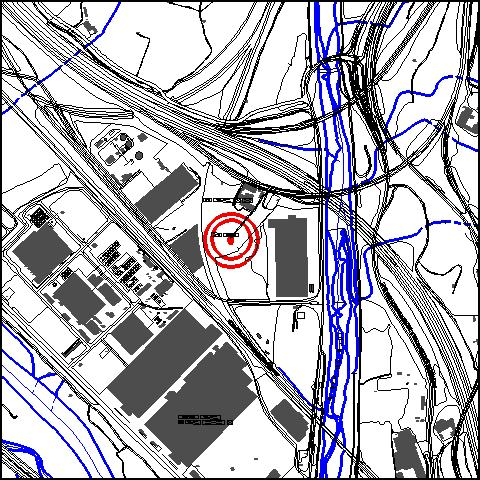
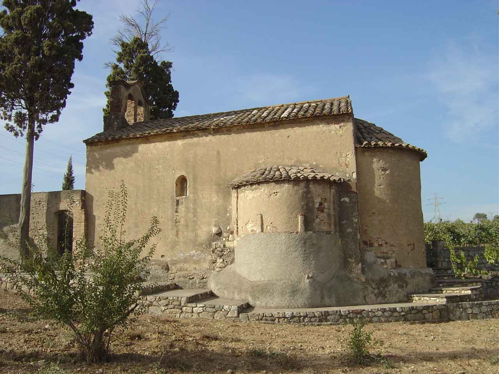

|  |  |
Nom de l’element: Ermita de Sant Quintí
Clau d’identificació: A.05
Nucli o indret: Can Pedrerol de Baix (Pol. Ind. Sant Vicenç).
UTM: X=415.977, Y=4.588.894.
1.1. Època de construcció i tipologia:
Capella dedicada a Sant Quintí del s. XII (entre 1.137 i 1.160), amb precedents del s.XI, situada on antigament hi havia hagut una vila romana (s. III dC). D’estil romànic, està formada per una nau amb planta rectangular i volta, amb un absis semicircular. A la façana sud prop del presbiteri s’obre una absidiola semicircular. No hi ha absis ni absidiola a la façana nord. Les finestres presenten doble esqueixada. La porta de mig punt situada a l’oest presenta doble arquivolta de degradació entorn a l’arc d’obertura. La capella està totalment arrebossada exteriorment i revestida interiorment. Presenta un campanar de cadireta truncat i refet. No hi ha timpà. Els murs són de pedra i les cobertes d’arc de pedra i teula.
1.2. Estat de conservació:
Malgrat no haver estat mai restaurada, les estructures portants, els forjats i les voltes, el paviment i els acabats interiors presenten un bon estat de conservació. La coberta, les façanes i les obertures tenen un estat de conservació mitjà.
1.3. Ús actual:
Capella religiosa privada.
1.4. Accés:
Accés des de la carretera B-225, agafant el trencall pel c. Metal·lúrgia i finalment, un camí de terra.
Capella del segle XII, romànica, situada en una zona on hi havia hagut una vila romana.
3.1. Usos admesos:
Religiós, ús recreatiu cultural i social
3.2. Condicions d’ordenació:
Segons Pla Especial a redactar.
3.3. Accés i serveis:
Accés des de la carretera B-225, agafant el trencall pel c. Metal·lúrgia i finalment, un camí de terra.
BCIL (Bé Cultural d’Interes Local)